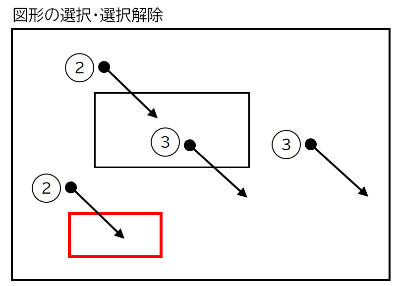

CALayerクラスを使用した簡単な図形描画ツール
サンプル動画
図形を描画する
四角形のCShapeALayerオブジェクトを作成し、addSublayerメソッドでビューに追加する。作成した図形をクリックすれば選択状態（赤線で囲まれる）になり、以下の操作を行うことができる。図形の外側をクリックすれば選択状態は外れる。
図形を移動する
四角形を選んでドラッグすれば任意の場所まで移動することができる。
図形を拡大・縮小する
四角形の縦の線をドラッグして図形を水平方向に拡大縮小する。
四角形の横の線をドラッグして図形を垂直方向に拡大縮小する。
四角形の四隅をドラッグして図形を水平/垂直方向に拡大縮小する。
実装のポイント
四角形を描画する
本アプリケーションでは、一つの矩形に一つのUAShapeItemクラスのオブジェクトを割り当てる。このクラスは CAShapeLayerオブジェクトを保持し、各種の描画操作を実装する。
矩形のCAShapeLayerオブジェクトを作成するには、NSBezierPathオブジェクトにより矩形を作成し、それをCAShapeLayerオブジェクトのpathプロパティにセットする。矩形の表示位置は、オブジェクトを貼り付ける親ビューの座標で定義する。
CAShapeLayerオブジェクトをビューに表示するには、親ビューのレイヤーにオブジェクトを追加する。
消去するには、CAShapeLayerオブジェクトのremoveFromSuperlayerメソッドを呼ぶ。
四角形の移動、拡大/縮小
四角形の形状は、原点の位置および幅と高さで決まる。四角形を表すオブジェクトはこれを属性として持つ。
四角形の移動は、ドラッグの方向と距離に応じて四角形の原点を移動することである。
四角形の拡大/縮小は、ドラッグの方向と距離に応じて、四角形の幅と高さを変更することである。ただし四角形の原点は四角形を描画したときの開始点であるため、四隅のうちのどれか一つとなる。したがって次の図に示すように、四角形の拡大/縮小の方向によっては原点の位置を移動させる必要があり、実装が少し複雑になる。
クラス関連図
![[graphic_editor3]](/lib/HTMLofImage.html?filename=/data/75/graphic_editor3.png&title=graphic_editor3&width=800)
ソースコード
イベントとハンドラの関連
操作方法：図中の番号は上記の関連表の番号と対応する
|  |